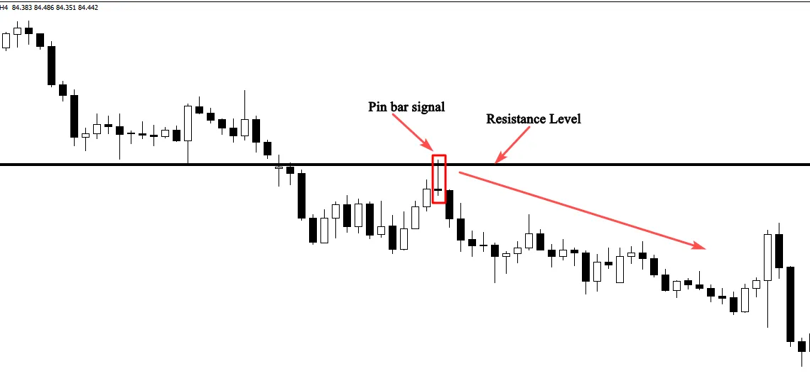

The pin bar candlestick is one of the most famous Japanese
candlesticks; it is widely used by price action traders to determine
reversal points in the market.
In this section, you will learn in detail how to identify potential pin bar
signals, and the conditions needed for high probability setups.
A pin bar is a chart candlestick, it is characterized by a very long tail
that shows rejection and indicates that the market will move in the
opposite direction.
The area between the open and close is called the real body, typically
all pin bars have a very small real body and a long shadow.
A Bullish pin bar is known for its lower wicks, and the bearish one is
characterized by long upper wicks, the color of the candlestick is not
quite important, however, bullish candles with white real body are
more powerful than candles with a real black body.
On the other hand, a bearish pin bars with black real bodies are more
important than the ones with white real bodies.
See how pin bars look like below:
To be honest, quality price action setups don’t exist in the market,
because you will see that sometimes you can find a high probability
setup, you feel very excited about it and you take your trade with
confidence, but at the end, you will be frustrated because the signal
fails for unknown reasons.
That happens a couple of times, because the market doesn’t move due
to pin bar formations, what moves the market is the law of supply and
demand.
Let me give you an example, if you identify a quality pin bar candle
near a support key level in an uptrend market, this is a powerful buying
signal to take, you shouldn’t ignore it, but if the amount of money that
buyers put in this trade is less than the amount of money that sellers
risk in the same trade, the market will not go in your predicted
direction.
If the signal fails, it doesn’t mean that your analysis is wrong, or pin
bars don’t work, it is just because the market didn’t validate your
decision, therefore, you accept your loss, and you look for another
opportunity.
You May ask yourself, why should we look for quality pin bar setups
if the market doesn’t respect them???
As you know, trading is a game of probabilities, there is no certainty,
this is why you should evaluate your pin bar setups from multiple
angles, and the fact that you are looking for quality setups means that
you are trying to put the probabilities of success in your favor which is
the right mindset of successful traders.
To determine whether or not a pin bar is worth trading, this price
action signal should respect the following criteria:
-The pin bar formed in bigger time frames such as the 4 hour or daily
time frame should be taken into consideration, because if you look at
smaller time frames, you can easily spot lot of pin bar signals, these
setups should be ignored, because smaller time frames generate lot of
false signals.
See the illustration below:
-The pin bar formed in line with the direction of the market is more
powerful than the one which is formed against the trend.
- If you can identify a clear trend that means that you know who is in
control of the market.
The formation of this candlestick pattern with the trend makes it so
effective.
See the chart below:
As you can see in the chart above, bullish pin bars that were formed in
line with the uptrend work, and they should be taken into
consideration.
But the bearish ones that were formed against the trend should be
ignored.
-The anatomy of a pin bar is important as well, you have to make sure
that the candlestick is a pin bar by looking at the distance between the
real body and the tail.
Pin bars with longer tails are more powerful.
The Psychology behind the pin bar candle formation:
Pin bars are formed when prices are rejected, this rejection doesn’t
indicate a reversal signal, because this price action setup can form
everywhere in your chart.
The most important areas to watch when trading pin bars are major
key levels such as: support and resistance, supply and demand zones,
and moving averages.
The formation of this candlestick chart pattern in these levels give a
clear idea about what happens in the market.
If the rejection was near a support level for example, this is an obvious
indication that the bulls are more powerful, and they are willing to
push the market to go upward.
See the chart below:
If the formation of this candlestick occurs near a resistance level, it indicates that the bears reject prices, and prevent the bulls from breaking this level. So, this means that sellers are willing to push the market downward. See the chart below:
If you understand the psychology behind this price action pattern formation, you will be able to predict what is likely to happen in the future, and you will make good trades based on high probability pin bar signals.